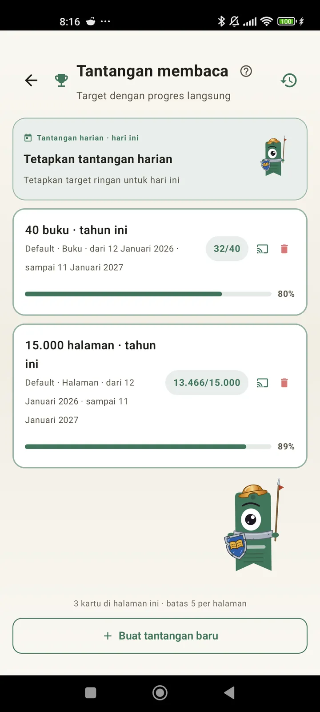

Kenali dirimu sebagai pembaca
Tantangan, bingo, widget, dan fitur lain untuk memaksimalkan bacaanmu. Baru di 3.7: widget tantangan dan bingo.

Tantangan membaca
Pasang target berdasarkan halaman, rangkaian, atau genre. Hingga 15 tantangan aktif gratis, tanpa batas dengan Pro. Plus tantangan harian yang bisa diatur dan tidak dihitung dalam batas.

Tantangan harian
Target baru setiap hari. Selesaikan tantangannya sebelum tengah malam agar rangkaianmu tetap berjalan.

Bingo membaca
Dua bingo baru setiap bulan dengan kotak bertema. Lengkapi baris, kolom, atau seluruh kartu.

Ringkasan mingguan
Setiap Senin, sekilas tentang minggumu: halaman dibaca, total waktu, rangkaian, dan perbandingannya dengan minggu sebelumnya.

Rekap bulanan
Saat bulan berakhir, Lecturameter merangkumnya: halaman, waktu, buku yang selesai, ritmemu dari hari ke hari, dan buku terbaikmu bulan itu.

Widget bingo Pro
Kartu bingo bulan ini, selalu terlihat, lengkap dengan kotak yang sudah kamu selesaikan dan garis yang sudah kamu buat.

Widget buku Gratis
Lihat buku yang sedang kamu baca langsung di layar utama: sampul, judul, penulis, halaman, dan persentase kemajuan, selalu terbaru. Ukurannya bisa diubah agar pas di mana saja.
Serius bro, aplikasi ini rasanya seperti terapi. Dari baca beberapa halaman sehari sekarang jadi sekitar 20 halaman sehari dan terus meningkatMasukan pengguna, dikirim lewat email

Perbandingan bulanan Pro
Sekilas melihat bulan-bulan terakhirmu tanpa membuka aplikasi. Batang untuk halaman tiap bulan dengan bulan ini disorot, jadi kamu langsung tahu apakah bulan ini lebih baik atau lebih buruk dari bulan lalu.

Widget tantangan Pro
Tantangan aktifmu dan kemajuannya di layar utama. Pilih mana yang ditampilkan dari layar Tantangan.